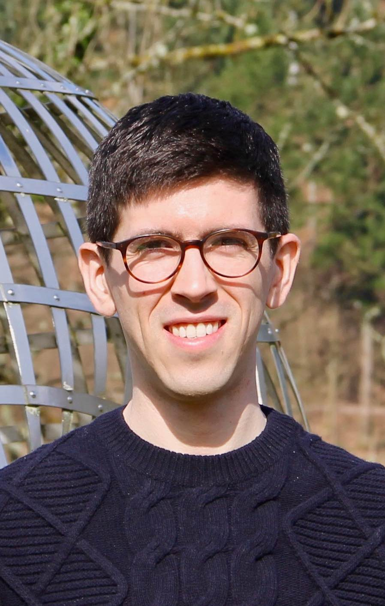
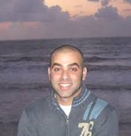
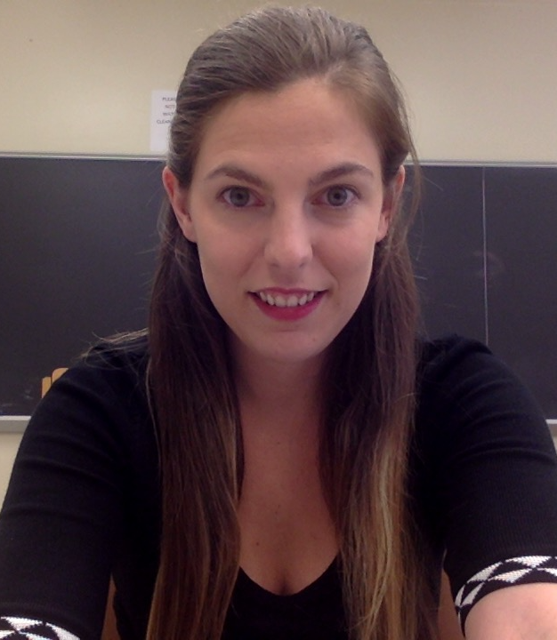

People
Core faculty

Joan Bruna
Assistant Professor, Department of Computer Science, Center for Data Science and Mathematics (affiliated).
\

Carlos Fernandez-Granda
Assistant Professor, Department of Mathematics and Center for Data Science.
\

Julia Kempe
Professor, Department of Mathematics, Computer Science and Center for Data Science.
\

Jonathan Niles-Weed
Assistant Professor, Department of Mathematics and Center for Data Science.
\
Postdocs and Fellows

Yossi Arjevani (Sept 2019 - )
Postdoc, Center for Data Science; optimization, machine learning.

Léo Miolane (Sept 2019 - )
Postdoc, Department of Mathematics and Center for Data Science; probability, statistics.
Qing Qu (Sept 2018 - )
CDS Moore-Sloan Fellow; signal processing, machine learning, optimization.
Grant Rotskoff (Sept 2017 - )
Postdoc, Courant Institute; statistical mechanics, machine learning.

Matthew Trager (Sept 2018 - )
Postdoc, Center for Data Science; algebraic geometry, deep learning.

Soledad Villar (Jun 2017 - )
Moore-Sloan Research Fellow; optimization, probability, topology and data.

Alex Wein (Sept 2018 - )
Courant Instructor; theoretical computer science, high-dimensional statistics, statistical physics of inference.
Ilias Zadik (Sept 2019 - )
CDS Moore-Sloan Fellow; high dimensional statistics, probability.
PhD Students
Brett Bernstein (Sept 2014 - )
David Brandfonbrener (Sept 2018 - )

Zhengdao Chen (Sept 2018 - )
Carles Domingo (Sept 2019 - )
Samy Jelassi (Sept 2018 - )

Aakash Kaku (Sept 2019 - )

Tim Kunisky (Sept 2017 - )

Sheng Liu (Sept 2019 - )
Kangning Liu (Sept 2019 - )
Sreyas Mohan (Sept 2018 - )
Karl Otness (Sept 2019 - )
Cinjon Resnick (Sept 2017 - )

Min Jae Song (Sept 2018 - )
Luca Venturi (Sept 2017 - )

Francis Williams (Sept 2018 - )
Aaron Zweig (Sept 2018 - )
MsC and Visitors
Lei Chen (Sept 2018 - )
Past members
Afonso Bandeira
Shuyang Ling
Augustin Cosse
Affiliated faculty
Gerard Ben Arous
Professor, Mathematics, Courant Institute.
Xi Chen
Assistant Professor, IOMS, Stern School.
Sinan Gunturk
Professor, Department of Mathematics, Courant Institute.
Eyal Lubetzky
Associate Professor, Mathematics, Courant Institute.
Andy Majda
Professor, Department of Mathematics and Climate, Atmosphere and Ocean Science, Courant Institute.
Adi Rangan
Associate Professor, Department of Mathematics, Courant Institute.
Eero Simoncelli
Silver Professor, Neural Science, Mathematics and Psychology;
Investigator, Howard Hughes Medical Institute.
Esteban Tabak
Professor, Department of Mathematics, Courant Institute.
Eric Vanden-Eijnden
Professor, Department of Mathematics, Courant Institute.